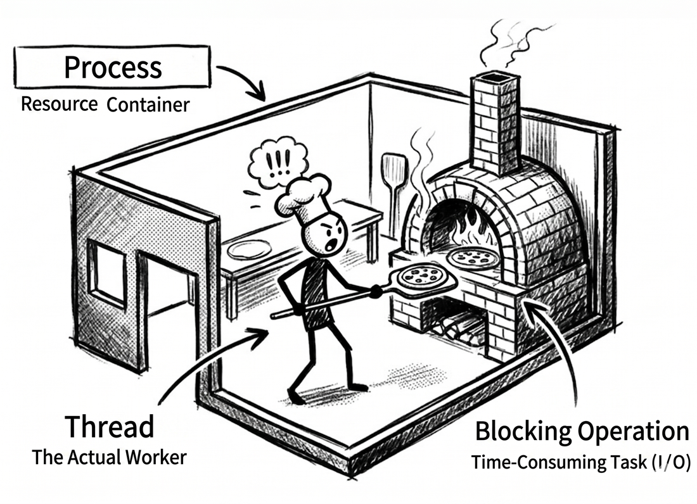
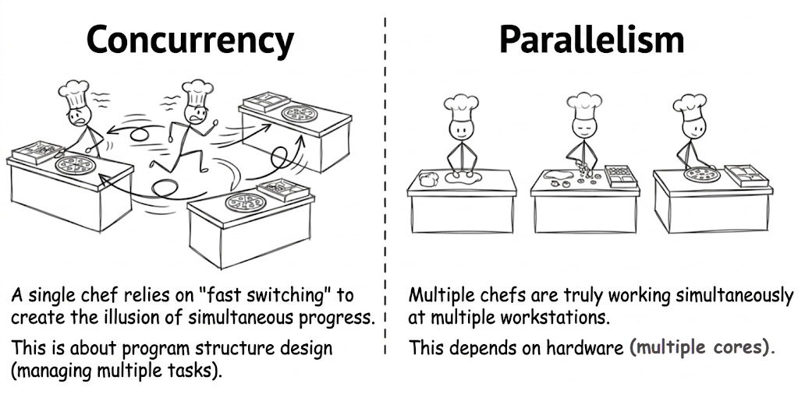
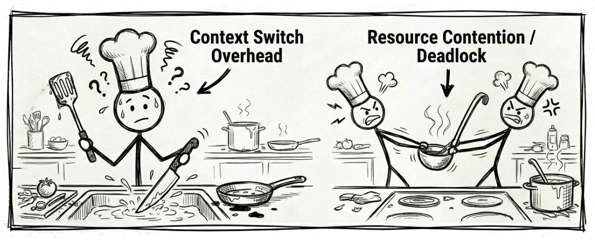
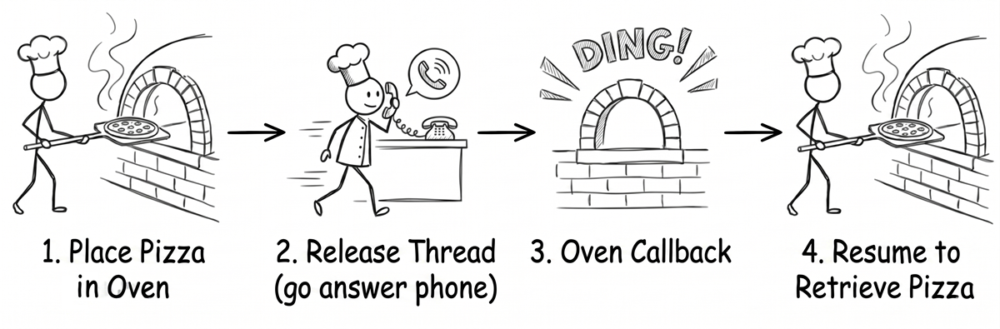
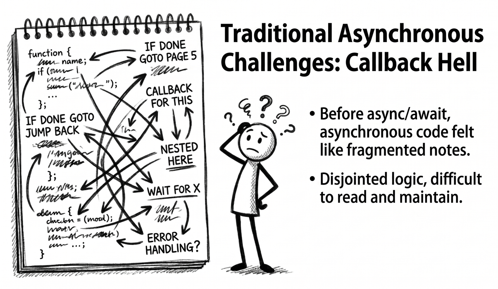
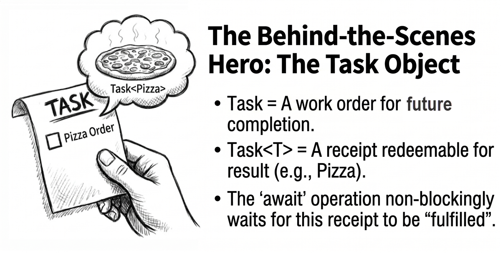

Chapter 1: Understanding threads and asynchrony
This first chapter takes an approachable path. Whether or not you have worked with threads and asynchronous programming before, the goal is to help you come away with a clear set of core ideas for the chapters ahead.
Why do programs need to handle multiple things at once?
Have you ever clicked a button in a desktop application and watched the window go blank while the mouse cursor kept spinning? Or visited a busy shopping site and found that the page loaded painfully slowly or even timed out altogether?
These frustrating experiences often point to the same underlying problem: the software is not handling “waiting” effectively. Whether it is waiting for a file to save, a network response to arrive, or a database query to finish, poorly managed waiting can make a program stall and drag down the user experience.

To make this idea more concrete, let’s start with an analogy: a pizza shop. Imagine that we are running this shop together, starting with its simplest operating model and then gradually improving its efficiency. As we follow that journey, we will naturally run into two core ideas in C# programming: multithreading and asynchronous programming.
Learning path for this chapter
We will use the pizza-shop analogy to look at three stages:
- Stage 1: the synchronous single chef. We start with the most basic single-threaded model to see how it works and where its efficiency bottlenecks lie.
- Stage 2: bringing in more staff. We then explore how multithreading can improve efficiency and what new challenges it introduces.
- Stage 3: the super-efficient chef. In the final stage, we examine the power of asynchronous programming and how C# uses
async/awaitto make it feel natural and approachable.
Let’s begin with the pizza shop in its original form and see how the first chef works.
Stage 1: the synchronous single chef
Key ideas: single thread, blocking
When the pizza shop first opens, there is only one chef. That chef corresponds to a thread in the world of programs: the one unit responsible for doing all the work. The workflow is simple: an order comes in, the chef prepares the dough, adds toppings, puts the pizza into the oven, and then waits until it is done before taking it out.
This model is called synchronous single-threading. Here, “synchronous” means that every step must be completed in order, one after another. The problem is “waiting.” Once the chef puts a pizza into the oven, he cannot do anything else. He just stands there watching the oven until the timer rings. During that time, he cannot take new orders or start preparing the next pizza.
This may still feel a bit abstract, so let’s walk through it in code. The following example runs that workflow and shows how the single chef maps directly to a single thread:
// Stage 1: the synchronous single chef (synchronous single-threading)
// Demonstrates how a single thread gets blocked
using System.Diagnostics;
Console.WriteLine(
"The pizza shop is open! " +
"Stage 1: only one chef (single-threaded)");
var sw = Stopwatch.StartNew();
// Simulate making three pizzas one after another
MakePizza(1);
MakePizza(2);
MakePizza(3);
sw.Stop();
Console.WriteLine(
$"All pizzas are ready. " +
$"Total time: {sw.ElapsedMilliseconds} ms");
void MakePizza(int id)
{
Console.WriteLine(
$"[Single chef] Starting dough prep " +
$"for pizza {id}...");
Thread.Sleep(500); // Simulate prep time for chopping and kneading
Console.WriteLine(
$"[Single chef] Pizza {id} " +
"is in the oven. Waiting...");
// Thread.Sleep simulates a blocking operation here.
// The chef can only wait.
// He cannot prep the next pizza or answer the phone.
Thread.Sleep(2000);
Console.WriteLine(
$"[Single chef] Pizza {id} " +
"is done! Taking it out.");
}Sample output (the exact output order and elapsed time may vary slightly depending on the environment):
The pizza shop is open! Stage 1: only one chef (single-threaded)
[Single chef] Starting dough prep for pizza 1...
[Single chef] Pizza 1 is in the oven. Waiting...
[Single chef] Pizza 1 is done! Taking it out.
[Single chef] Starting dough prep for pizza 2...
[Single chef] Pizza 2 is in the oven. Waiting...
[Single chef] Pizza 2 is done! Taking it out.
[Single chef] Starting dough prep for pizza 3...
[Single chef] Pizza 3 is in the oven. Waiting...
[Single chef] Pizza 3 is done! Taking it out.
All pizzas are ready. Total time: 7557 msSource code: DemoSingleThread
Core concepts
Before we continue, here is a quick summary of the key ideas so far:
| Term | Pizza-shop analogy |
|---|---|
| thread | Our chef. In a basic program, there is only one chef by default, so only one thing can be done at a time. You can think of a thread as the smallest unit that the operating system schedules and uses to run code. |
| process | The entire pizza shop. It is the application as a whole, including the chef (thread), oven, ingredients, and every other resource. In an operating system, a process is the basic unit used to isolate applications. It has its own memory space so that applications do not interfere with one another. |
| synchronous | In this flow, the chef must wait for the current step to finish before moving on to the next one. In other words, the caller is tied up by the current work and cannot move forward yet. |
| blocking operation | Putting the pizza into the oven to bake. During that time, the chef (thread) is “blocked” and cannot do anything else. In software, this corresponds to time-consuming operations such as reading a file or waiting for data over the network. |
If the terms process and thread still feel a little abstract, you can think of them this way:
- A process is the application’s “container” or sandbox. It owns its own memory space and system resources, which helps keep applications isolated from one another.
- A thread is the “worker” inside that container that actually executes code.
Every process has at least one worker: the main thread. But to handle multiple pieces of work simultaneously, a single process can also have multiple workers, meaning multiple threads. Those workers share resources inside the same container, such as memory. That shared access is why multithreaded programming requires careful attention to resource contention.

The efficiency bottleneck: the cost of waiting
The biggest problem with stage 1 is this: waiting ties up the thread. In this analogy, the chef represents the thread, while the CPU is what actually performs computation behind the scenes. When the chef is just standing in front of the oven waiting, that thread cannot make progress on anything else. The oven may be busy doing its job, but the overall workflow is still stuck.
This flow is simple and easy to understand, but it is not very efficient. Imagine rush hour, with customers lining up while our chef cannot take any new orders because he is waiting for one pizza to finish baking. In software terms, this is the classic performance bottleneck of a single-threaded, blocking model.
A “blocking” example in real code
Consider desktop applications like WinForms and WPF. These programs typically have only one UI thread, which is responsible for handling all user interactions, such as button clicks and moving windows. Once we run a time-consuming operation on that thread, the whole program appears “frozen.” The following Windows desktop UI event handler demonstrates that situation:
If waiting wastes so much time, a natural question follows: can we let the chef do something else while waiting? This brings us to stage 2.
Stage 2: bringing in more staff
Key ideas: multithreading and concurrency
To deal with the inefficiency caused by waiting, we introduce a new operating model in the kitchen: multithreading. The idea is intuitive. Instead of letting one chef wait and freeze the whole kitchen, we bring in more chefs and divide the work so that while one task is waiting, another chef can continue making progress.
This was a very common approach. However, keep one thing in mind: if the program is really waiting on file, network, or database I/O, modern .NET usually favors asynchronous I/O rather than tying an extra thread to every waiting operation. In this section, we first build the basic mental model of multithreading. In the next stage, we will look at the approach that fits I/O waiting better.
Let’s start with the simplest case. On a computer with only one CPU core, it is like hiring several chefs but giving them only one workstation. They have to take turns using it in rapid succession. From the outside, it looks as if multiple orders are being handled “at the same time,” but at any given moment, only one chef is actually using the workstation. The illusion of simultaneity is created by rapid switching.
On a modern computer with multiple CPU cores, the story goes one step further. This is like having multiple workstations in the kitchen, so several chefs can make pizzas simultaneously on different stations. This is true parallel execution.

Concurrency vs. parallelism
Before we look at more code, let’s clarify an important distinction: concurrency and parallelism are not the same thing.
- concurrency means the ability to manage multiple tasks. In our pizza shop, imagine just one chef switching back and forth among several orders. The key is that while one task is waiting, the chef can do something else instead of standing idle. The tasks overlap in time, but they are not necessarily running at the exact same instant. This is mainly about the structure of the system.
- parallelism means executing multiple tasks at the same time. In the computing world, that requires multiple CPU cores. In our pizza shop, it means we really did hire several chefs, each working on a pizza simultaneously at a separate workstation. This is mainly about the execution model.
Multithreading can achieve concurrency on a single core, and it can also use multiple cores to achieve parallelism.

With that distinction in place, the next code example becomes much easier to read. It shows the workflow of several chefs, representing multiple threads:
// Stage 2: more flexible multitasking chefs (multithreading)
// Demonstrates concurrent work with multiple threads
using System.Diagnostics;
Console.WriteLine(
"The pizza shop is open! " +
"Stage 2: multiple chefs at work (multithreading)");
var sw = Stopwatch.StartNew();
// Create three separate threads, representing three different chefs
Thread chef1 = new(() => MakePizza(1));
Thread chef2 = new(() => MakePizza(2));
Thread chef3 = new(() => MakePizza(3));
// Start all chefs at the same time
chef1.Start();
chef2.Start();
chef3.Start();
// The main thread (restaurant manager) waits for all chefs to finish
chef1.Join();
chef2.Join();
chef3.Join();
sw.Stop();
Console.WriteLine(
$"All pizzas are ready. " +
$"Total time: {sw.ElapsedMilliseconds} ms");
void MakePizza(int id)
{
int threadId = Environment.CurrentManagedThreadId;
Console.WriteLine(
$"[Chef {threadId}] Starting prep " +
$"for pizza {id}...");
Thread.Sleep(500); // Simulate prep time for chopping and kneading
Console.WriteLine(
$"[Chef {threadId}] Pizza {id} " +
"is in the oven. Waiting...");
// Thread.Sleep is still a blocking operation,
// but each pizza has its own dedicated chef (thread),
// so while one chef waits, the others can keep
// working on their own pizzas.
Thread.Sleep(2000);
Console.WriteLine(
$"[Chef {threadId}] Pizza {id} " +
"is done! Taking it out.");
}Note
new Thread(...)is used here intentionally so the contrast between the models is easy to see. In real-world modern .NET code, it is much more common to useTask, the Task Parallel Library (TPL), or background-work mechanisms provided by frameworks instead of manually creating aThreadevery time. EachThreadobject consumes its own memory, usually around 1 MB. If you need to handle thousands of short-lived operations, creating threads by hand can exhaust system resources very quickly. By contrast,Taskis a lightweight abstraction; with the thread pool, it can reuse threads and significantly reduce memory overhead.
Sample output (the exact output order, thread IDs, and elapsed time may vary depending on the environment and scheduling):
The pizza shop is open! Stage 2: multiple chefs at work (multithreading)
[Chef 4] Starting prep for pizza 2...
[Chef 5] Starting prep for pizza 3...
[Chef 3] Starting prep for pizza 1...
[Chef 4] Pizza 2 is in the oven. Waiting...
[Chef 5] Pizza 3 is in the oven. Waiting...
[Chef 3] Pizza 1 is in the oven. Waiting...
[Chef 4] Pizza 2 is done! Taking it out.
[Chef 3] Pizza 1 is done! Taking it out.
[Chef 5] Pizza 3 is done! Taking it out.
All pizzas are ready. Total time: 2548 msSource code: DemoMultiThread
Pros and cons of multithreading
While this model clearly improves efficiency, it also introduces new complexity. In this example, the most direct benefit is that it reduces the overall completion time. Even though each chef is still blocked during Thread.Sleep, the waiting time for the three pizzas can overlap because we have several chefs working at once. As a result, the total elapsed time goes down. If the work itself is CPU-bound and the machine has multiple CPU cores, multithreading can also further improve CPU utilization and overall throughput.
The downsides include the following:
- The cost of
context switching. Switching between tasks is not free. A chef has to put down the tools for pizza A, wash up, and pick up the tools for pizza B. This switching takes time and effort. In software, when the operating system switches threads, it must save the current state and load a new one, which also adds overhead. - Synchronization issues. For example, if several chefs need the only sauce ladle at the same time, a conflict arises. In software, that kind of conflict leads to race conditions. Worse still, it can also lead to deadlocks. Imagine chef A holding the only sauce ladle while waiting for chef B to finish with the only cheese grater. At the same time, chef B is holding the cheese grater while waiting for chef A to give up the ladle. Both chefs are stuck waiting on each other, and the whole program freezes with them.

The hidden cost of threads
During some phases of garbage collection in .NET, managed threads need to be paused. The more threads there are, the higher the associated coordination and recovery costs. However, this does not mean every GC pauses all threads from start to finish. In modern .NET, background GC allows application threads to keep running most of the time and pauses them only briefly in specific phases. Similarly, when the debugger hits a breakpoint, it often pauses the application’s other threads until you continue execution.
See Microsoft documentation: Garbage collection and performance, Background garbage collection
Multithreading improves efficiency, but it also makes the program more complex to manage. Let’s look at another approach that better fits waiting scenarios: using that waiting time productively without the chaos.
Stage 3: the super-efficient chef
Key idea: asynchronous programming
The pizza shop now gets a “super chef,” whose working style is strikingly similar to asynchronous programming.
When this chef puts a pizza into the oven, he neither stands there waiting nor does he immediately start making another pizza. Instead, he delegates the time-consuming job of “baking the pizza” to the oven and frees himself up completely to do other work, such as answering phone orders at the front counter or helping customers. He can do this because the oven is set up to “ding!” when the pizza is ready. This is our callback notification. When he hears it, he can pause what he is currently doing and come back to handle the finished pizza.

The example below shows how this super chef, representing our asynchronous model, works.
Note
In the next example, you will see unfamiliar keywords such as
async,await, andTask. Do not worry if you do not understand every detail right away. On this first pass, just focus on one thing: while the program is waiting, is the thread really being released?Also keep this in mind:
async/awaitexcels at avoiding thread blocking while waiting for I/O. It does not automatically make CPU work run faster.One more important detail: when you call an
asyncmethod, its body first keeps running on the current thread until it reaches the firstawaitthat is not already complete. So anasyncmethod does not mean “start on a new thread immediately.” The real point is that when waiting is needed, the thread is returned first and the rest of the work resumes later.
// Stage 3: the super-efficient smart chef (asynchronous programming)
// Demonstrates how async/await releases the thread
// for non-blocking waiting
using System.Diagnostics;
var msg =
"The pizza shop is open! " +
"Stage 3: a super chef with a smart oven " +
"(asynchronous programming)";
Console.WriteLine(msg);
var sw = Stopwatch.StartNew();
// Start three asynchronous pizza-making tasks
// Note: calling an async method begins running on the current thread
// until it reaches the first incomplete await.
// It does not automatically jump to a new background thread at the start.
var p1 = MakePizzaAsync(1);
var p2 = MakePizzaAsync(2);
var p3 = MakePizzaAsync(3);
// Asynchronously wait for all pizza tasks to finish
await Task.WhenAll(p1, p2, p3);
sw.Stop();
msg = $"All pizzas are ready. Total time: {sw.ElapsedMilliseconds} ms";
Console.WriteLine(msg);
async Task MakePizzaAsync(int id)
{
// Capture the current thread ID so we can observe thread changes
int threadId = Environment.CurrentManagedThreadId;
var str =
$"[Chef {threadId}] Starting pizza {id}, " +
"waiting for the dough to rise first...";
Console.WriteLine(str);
// Simulate a wait that can be asynchronous,
// such as waiting for the dough to rise
// or for ingredients to arrive.
// This does not block the thread.
await Task.Delay(500);
threadId = Environment.CurrentManagedThreadId;
str =
$"[Chef {threadId}] Dough is ready. Pizza {id} " +
"goes into the oven; timer set, " +
"off to do something else!";
Console.WriteLine(str);
// Simulate a time-consuming operation
// that waits for an external response:
// baking in the oven. While awaiting, the thread is not blocked.
// The system can use that thread for other work
// until the wait is over.
await Task.Delay(2000);
threadId = Environment.CurrentManagedThreadId;
str =
$"[Chef {threadId}] Ding! Pizza {id} is ready, " +
"coming back to take it out.";
Console.WriteLine(str);
}One detail is worth noting. We use Task.Delay to simulate a time-consuming wait for an external response, such as baking in the oven. In software, you can picture this as network operations or file access. But Task.Delay itself is just a timer delay. It does not perform real I/O. We are only using it here to simulate asynchronous waiting, not to represent actual I/O.
Source code: DemoAsyncAwait
Below is some sample output from this example (the exact output order, thread IDs, and elapsed time may vary depending on the environment and scheduling):
The pizza shop is open! Stage 3: a super chef with a smart oven (asynchronous programming)
[Chef 1] Starting pizza 1, waiting for the dough to rise first...
[Chef 1] Starting pizza 2, waiting for the dough to rise first...
[Chef 1] Starting pizza 3, waiting for the dough to rise first...
[Chef 5] Dough is ready. Pizza 1 goes into the oven; timer set, off to do something else!
[Chef 7] Dough is ready. Pizza 3 goes into the oven; timer set, off to do something else!
[Chef 5] Dough is ready. Pizza 2 goes into the oven; timer set, off to do something else!
[Chef 7] Ding! Pizza 3 is ready, coming back to take it out.
[Chef 5] Ding! Pizza 1 is ready, coming back to take it out.
[Chef 7] Ding! Pizza 2 is ready, coming back to take it out.
All pizzas are ready. Total time: 2530 msWhy do the chef numbers keep changing?
If you look closely at the output above, you will notice that the chef number, which is the thread ID, can change between different stages of the same pizza. For example, pizza 1 might start on chef 1, but after the dough has risen, chef 5 might continue and put it into the oven.
The reverse is also true. After different await points, the same chef may end up continuing different pizzas. This happens because each chunk of work that resumes after a wait is treated as its own schedulable unit. The thread pool only cares about which thread is available and which continuation is ready to run; it does not remember which pizza that thread was handling before.
More specifically, in a Console app, once execution reaches an await, such as waiting for the dough or the oven timer, the method pauses and yields control instead of holding on to the current thread. When the wait finishes, the continuation is usually picked up by any available thread from the thread pool, though it may occasionally be the same one. That is why the thread ID may change or stay the same. This is where asynchrony is flexible: the work is not tied to one specific thread. In a desktop application with a UI thread, the continuation usually returns to the original UI synchronization environment (SynchronizationContext), so it often looks as though the same dedicated chef handles everything from start to finish. We will examine that in more detail in later chapters.
The key to asynchrony: do not block the thread
The most fundamental difference between asynchrony and multithreading lies in how they treat the thread, which is our chef:
- Multithreading (stage 2): in this example, each pizza is tied to its own chef (thread). Even while the oven is baking, that chef is still occupied. Other chefs can continue working on other pizzas, so total time goes down, but thread cost goes up.
- Asynchrony (stage 3): the chef (thread) hands the baking work off to the oven and is then free to move on. He can handle something else, and when the oven rings, the runtime arranges for the continuation to resume execution.
In other words, the asynchronous model uses the chef’s time more effectively. When a thread encounters an I/O operation that requires waiting, such as file access or a network request, it does not stay blocked in place. Instead, the system can schedule it to do other work. That often improves both throughput and responsiveness.
But there is an important boundary to remember. “Releasing the thread” means not occupying it during waits for I/O or timers. If the work requires actual CPU computation, such as image processing, encryption, or data transformation, async/await does not magically make it non-blocking. That kind of work still consumes CPU time. It is usually handled with tools such as Task.Run, Parallel, or other parallelism techniques.
The challenge of traditional asynchrony: the chaotic notebook
Key idea: callback hell
Before C# introduced async/await, implementing this efficient asynchronous model was quite difficult. It was like asking our super chef to carry around a messy notebook filled with “if … then …” instructions:
“If the phone rings, write down the order details, then turn to page 5 of the notebook.” “If the oven rings, put down the phone, take out the pizza, then turn to page 8.” “If the delivery driver comes back, then…”
In callback-based code, the logical flow gets fragmented into scattered pieces. This is known as callback hell, and it makes code hard to read, debug, and maintain.

C# introduced a “magic recipe” that lets the super chef express the workflow clearly. Let’s look at what that recipe actually does.
The magic recipe: the power of async and await
To eliminate the confusion of callback hell, C# introduced the async and await keywords. You can think of them as a “magic recipe.” With that recipe, the chef can read and execute a complex asynchronous workflow in a way that still looks simple and linear, almost like synchronous code. In other words, the messy notebook can finally be retired.
How async and await work
Now let’s zoom in on the two most important keywords in that magic recipe:
- The
asynckeyword- Analogy: it is like marking the cover of the recipe book with the words “magic recipe.” That mark does not change the behavior by itself, but it is essential.
- What it does: it serves two main purposes. First, it allows the method to use the
awaitkeyword. Second, it tells the compiler to transform the entire method into a sophisticated state machine that can manage the asynchronous workflow behind the scenes. That involves some lower-level compiler magic, which we will uncover gradually in later chapters. For now, it is enough to think of it as a mechanism that automatically remembers “which step we were on.”
- The
awaitkeyword- Analogy: this is the most important instruction in the magic recipe. When the chef reads a line such as
await oven.BakeAsync(), he first checks whether the oven’s work is already done. If not, he gives up control and goes off to do something completely different, such as serving other customers, instead of standing there waiting. If the work is already complete, he can move directly to the next step. - What it does:
awaitfirst checks whether the operation it is waiting on has already completed. If not,awaitdoes not block the current thread. Instead, it pauses the method and registers the rest of that method as a continuation. Later, when the operation completes, the state machine generated by the compiler for theasyncmethod can resume execution at the right time. If the awaited work is already complete from the start, the result is obtained immediately and execution continues without pausing the method. That is why asynchronous code can look like straightforward synchronous code while still avoiding thread blocking during non-blocking waits.
- Analogy: this is the most important instruction in the magic recipe. When the chef reads a line such as
The unsung hero: the Task object
In the pizza-shop analogy, await is not waiting for the result itself. It waits for a Task object representing work that will complete in the future:
- Analogy for
Task: when the chef starts an asynchronous operation, such asBakeAsync(), he does not immediately receive a finished pizza. Instead, he gets an “order receipt.” That receipt is theTaskobject. It represents “work that will complete in the future,” often described by terms such as a future or a promise. - Analogy for
Task<T>: if the work will eventually produce a result, such as a finished pizza, then the chef receives a receipt that can later be exchanged for a pizza. That isTask<Pizza>. - What
awaitdoes: the core job ofawaitis to wait for that “receipt” to be redeemed without blocking. You can think of it as the chef handing the receipt to the system and then turning away to do something else. The system’s “magic” is that when the order is ready, it taps the chef on the shoulder and tells him to come back to exactly where he left off. If the receipt is aTask<Pizza>, thenawaitis the step that finally unwraps the receipt and gives you the hotPizzainside.

At this point, the overall shape of async/await should feel much clearer. It allows us to write code in a synchronous-looking, linear style while retaining the benefits of asynchrony: no blocked thread during waits and better responsiveness. That is why it appears almost everywhere in modern C# development.
Summary: choosing the most suitable model
From a tiny shop with only one chef to a more efficient restaurant with smarter tools, we have seen how our pizza shop, which represents an application, can gradually evolve. The following table summarizes the three operating models:
| Model | What the chef (thread) does | Complexity | Best use case |
|---|---|---|---|
| Synchronous single-threading | Does one thing at a time and waits in front of the oven. | Very low | Simple tasks. |
| Multithreading | Multiple chefs take turns on one workstation (single core), or work simultaneously on separate workstations (multiple cores). | High | CPU-bound computation that benefits from using multiple cores at the same time. |
Asynchrony (async/await) |
Offloads time-consuming work such as baking to the oven, then goes to do something else and waits for notification. | Low | I/O-bound operations such as network requests, database queries, and file access. |
One reminder: this table describes common tendencies, not universal rules. In practice, the key question is whether the bottleneck is CPU-bound or I/O-bound, and whether you need to avoid occupying the current thread. In fact, CPU-bound work can also be offloaded to background threads inside an async/await flow with Task.Run. We will explore that more in chapter 3.
Next step
By running a pizza shop, we gradually built a mental model for both the basic blocking approach and the more efficient asynchronous one. The core idea this chapter aims to establish is simple: async/await is an important and commonly used tool for modern C# developers handling time-consuming operations, especially I/O operations. It usually does not make CPU-bound work magically faster, but it often improves responsiveness and scalability during I/O waits, helping your application behave more like the “super chef.”
If the pizza-shop analogy helped you form a solid mental model, then this chapter has already done much of what it set out to do. From here, we can use that model as the starting point for more advanced topics such as the Parallel class, PLINQ, and more complex synchronization mechanisms, moving step by step toward building efficient and reliable modern applications.
Buy the ebook: Amazon Google Play Books Kobo